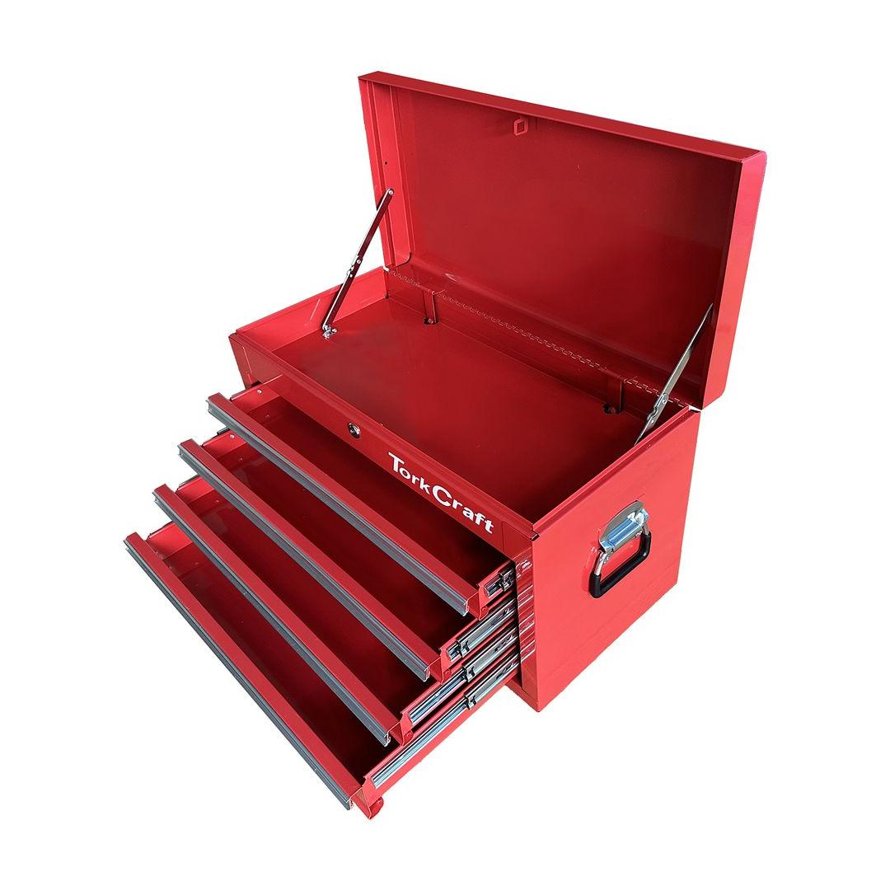
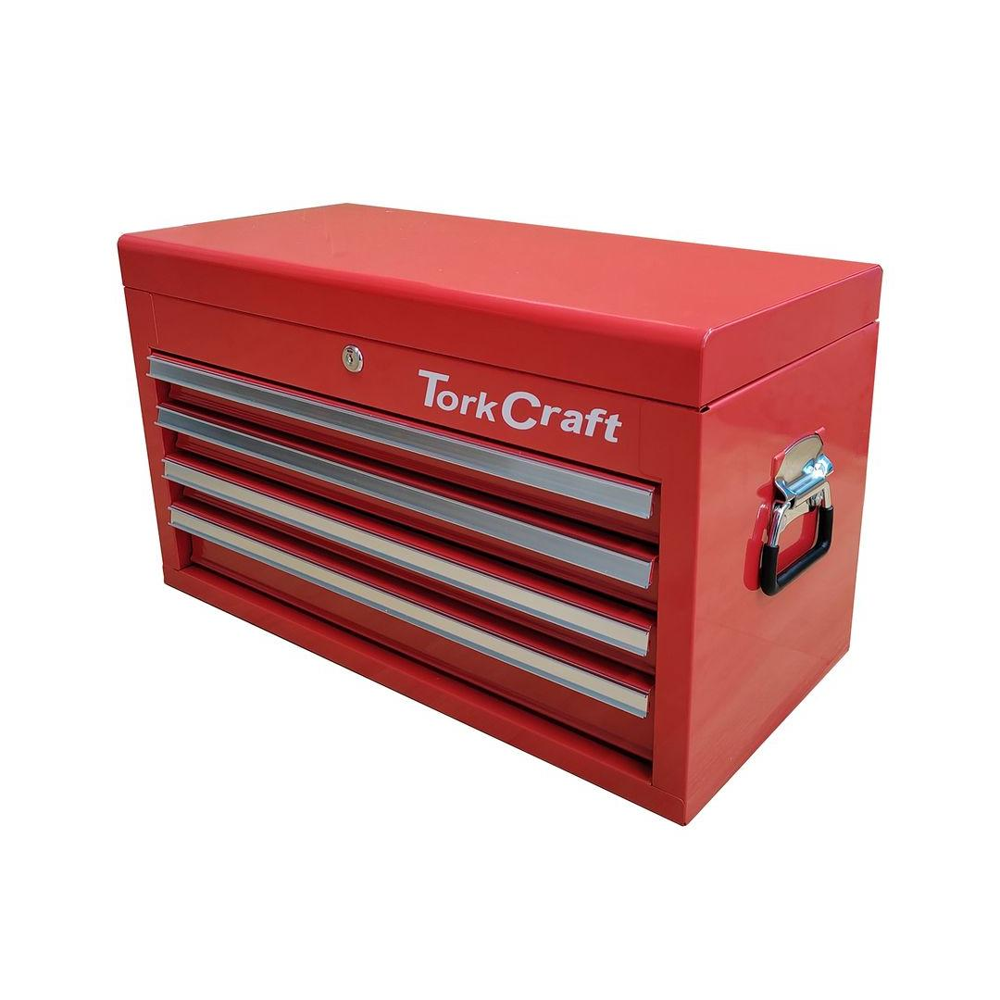

TCTB002
3995.10


This Tool Box is a comprehensive tool storage solution designed to keep your workspace organized and efficient. This robust tool box features four spacious drawers and a convenient top tray, providing ample storage for a wide range of tools and accessories. The drawers are equipped with smooth-running ball-bearing slides, ensuring easy access to your tools. The top tray offers additional storage space for smaller items, keeping them within reach. Whether you&re a professional mechanic or a DIY enthusiast, this tool box is a reliable and practical choice for storing and transporting your tools.
Application: